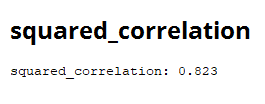

Boston home price prediction
Data used: Housing prices data set
This project seeks to train a model to predict the dependent variable
housing prices in the suburbs of the city of Boston, Massachusetts, United States
starting from a series of independent variables (
) linked to the dwelling itself
and to variables of the environment.
As expected, house prices are conditioned by multiple factors, the locality in question, as well
as surface area and proximity (or distance) to different emblematic points of a city.
For this purpose we will use the UCI - housing data set.
We will proceed to the analysis of the data, for a better understanding, we observe the
independent variables of the data set and their meaning:
|
Name |
Description |
Type |
Range |
|---|---|---|---|
| CRIM | Crime rate per capita by city | Numeric | 0 - 88,976 | ZN | Proportion of residential area divided into lots of more than 25 thousand square meters | Numeric | 0 - 100 | INDUS | Proportion of Non-Retail Business Acres by City | Numeric | 0,46 - 27,740 | CHAS | Borders with the Charles River (1 yes - 0 no) | Categoric | 0 - 1 | NOX | Nitric Oxide concentration (parts per 10 million) | Numeric | 0,385 - 0,871 | RM | Average number of rooms per dwelling | Numeric | 3,561 - 8,780 | AGE | Proportion of owner-occupied units built before 1940 | Numeric | 2,9 - 100 | DIS | Weighted Distance to 5 Boston Job Centers | Real- numeric | 1,130 - 12,127 | RAD | Radial motorway accessibility index | Numeric | 1 - 24 | TAX | Total property tax rate every $ 10,000 | Numeric | 187 - 711 | PTRATIO | Student / teacher ratio by city | Numeric | 12,6 - 22,0 | B | 1000(Bk - 0.63)^2 where Bk is the proportion of Afro-descendants per city | Numeric | 0,320 - 396,9 | LSTAT | Percentage of the lower class population | Real- numeric | 1,73 - 37,97 |
The dependent variable is MEDV, the average value of
owner-occupied homes in thousands of dollars.
Considering that we have labeled data that allow us to train a correct response, we will use
supervised models, the objective being to develop a model to be able to predict new information
on the dependent variable when we have new data on variables.
independent.
In turn, given that the dependent variable is a continuous value, we are facing a regression
problem and not a classification problem.
Being a regression problem we will use linear regression making sure to remove the noise and
collinearity of the variables, as well as
normalize the data in case of having very disparate distributions since the use of this
algorithm requires it.
For this we will analyze missing data and outliers, the data set does not have missing data,
except in the variable to predict (4 cases)
Regarding the outliers for the variables that present a greater deviation within their ranges
ZN, AGE, TAX, the scatter graphs are observed:
Scatter plot of AGE variable
Scatter plot of variable TAX
Scatter plot of variable ZN
In these variables no abnormal values are observed, apart from the fact that some are located at
the extremes of the distribution, they make up a group of several points which
it would not indicate that they are erroneous data or outliers.
Now we will focus on the study of the collinearity of the attributes, in the case of rapid
miner, the tool incorporates the removal in the model
of correlated attributes to avoid damaging the performance of the model, but it is also useful
to analyze the correlation matrix to visualize
said relationships:

When observing the matrix it is seen that certain attributes have an important correlation, the
most correlated are represented
with dark violet colors. It is possible to observe that NOX shows high correlations with AGE
(0.731) and DIS (-0.769).
In turn, INDUS shows high correlations with NOX (0.764), with DIS (-0.708) and with TAX (0.721)
But AGE and DIS (-0.748) are also observed
In turn, variables such as INDUS and NOX show correlations with others in the model, which is
why they are great candidates to be withdrawn from it.
Finally, the ranges of the attributes are dissimilar to each other, as we can see in the
attribute description table
developed at the beginning, this indicates that we are going to need to standardize the
distributions to achieve that all the variables move within a range
similar, avoiding giving greater weight to those variables with higher ranges that may not be so
relevant for the model.
So it's recommended normalizing the data to work with models sensitive to these variations, such
as linear regression.
We will divide the data set into training and test data, to ensure that the training data set is
representative, they are randomized
the data with a node named Shuffle. This is to prevent them from being sorted when selecting
parts of the data set for validation,
training and testing to avoid working with segmented and unrepresentative data from the entire
universe.
After randomizing the data, the data set will be divided filtering 70% for training data and 30%
for tests, as shown in the following image:
To the training data we apply a rapid miner node used to optimize parameters: Optimizer and we
obtain that the minimum squared errors
They are obtained by using T-Test as a feature selection method, with an alpha of 0.5 and
without using bias.
In this case, the sum of the square root of the errors at the mean gives 3,589, the lowest value
obtained.
The following is the output obtained by rapid miner of the first iterations ordered from least
to greatest by square root of the error:

As you can see, they all give the same error and use the same feature selection method, varying
the number of iterations and the value of alpha.
Therefore, it is decided to apply said selection in linear regression.
Within the Validation of the rapid miner model I apply the normalization and the linear
regression model:
Applying the model and measuring the performance for validation of the training at the start.
If the output of the linear regression is observed, without any doubts, it is seen that of the
variables analyzed are more significant in
Regarding the model and its prediction, as it is possible to see in the following image:

According to the image (the more asterisks the variable is more significant for the model) it is
obtained that:
RM: Average number of rooms in the home
DIS: Weighted distance to 5 Boston job centers
PTRATIO: Student / teacher ratio by city
LSTAT: % of lower class population
They are the most significant variables for the model, followed by:
ZN: Proportion of residential area with lots over 25 thousand square meters
TAX: Home tax value every $ 10,000
RAD: Radial motorway accessibility index
The output of the linear regression indicates a summary of the coefficients obtained for each
independent variable of the model:
The image shows a high coefficient for RM: Average number of rooms in the house, with the p
value being 0 and a high t statistic,
The independent variable DIS: Weighted distance to 5 Boston job centers has a negative
coefficient, which makes sense given that
the greater distance to employment centers would decrease the price of housing,
Something similar although with less weight occurs with the % of the lower class population in
the neighborhood (LSTAT) and PTRATIO: Student / teacher ratio by city, given that since there
are more students per teacher
the area is considered attractive to live thinking of families with children.

When we evaluate the performance of the model for the test data, it is observed for the analyzed
data set that the correlation of the model obtained is 0.823, that is, 82.3% of the variation
of the dependent variable
can be explained by the variation of the independent variables used in the model.
At the same time we can also measure the prediction error since we know the real output value,
for this we create
the variable residuals, subtract from the prediction with the real value:
Therefore, a minimum residual value of -18,864 and a maximum of 12,268 are obtained with a mean
of 0.067 and a deviation of 4.637.
The following graph indicates how the residuals are distributed, following a normal
distribution.